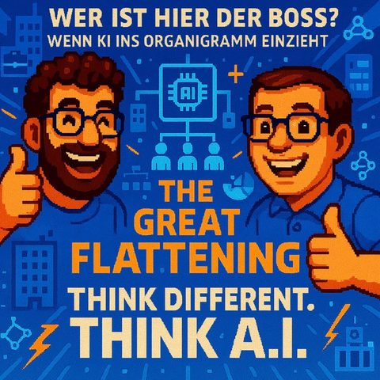

The Great Flattening
Read in EnglishThemen Führung und ArbeitWissensmanagement
33 Sekunden zur Folge, bevor du liest.
Worum es geht
Wie KI Hierarchien und Mittelmanagement verändert
Macht KI eigentlich Hierarchien platt? Mark und Jens knüpfen direkt an ihre letzte Folge mit Gast René an und fragen sich diesmal, wo KI im Org-Chart überhaupt auftaucht, und was das für Teams, Führungskräfte und ganze Unternehmen bedeutet, wenn Entscheidungen plötzlich schneller, flacher und crossfunktionaler getroffen werden.
Ausgangspunkt ist der abgenutzte, aber hartnäckige Satz "KI nimmt dir nicht den Job weg, der Mensch, der KI nutzt, tut das". Die beiden ordnen ein, was Studien wie die des IFO-Instituts wirklich hergeben (20 bis 30 Prozent der Unternehmen erwarten Stellenabbau, andere rechnen mit mehr Stellen), und warum Schlagzeilen über Entlassungen bei Microsoft & Co. selten die ganze Wahrheit erzählen. Klar wird: Produktivitätsgewinn heißt nicht automatisch Personalabbau, aber er verändert, wer im Unternehmen welche Verantwortung trägt.
Besonders spannend wird es beim Blick aufs mittlere Management. Jens und Mark diskutieren, warum flachere Hierarchien und crossfunktionale Teams durch KI-Agenten einen Schub bekommen, nennen das Beispiel Amazon-Chef Andy Jassy und die Fusion von IT- und HR-Abteilung bei Moderna. Auch das leidige Thema Vibe Coding taucht wieder auf: Tools, die nicht nur Code, sondern gleich noch die eigene Qualitätssicherung mitliefern. Ein Trend, der zeigt, wie schnell sich die nötigen Skills gerade verschieben: weg von reinem Fachwissen, hin zu Soft Skills und einem Gespür dafür, wie man mit Maschinen "verhandelt".
Mark bringt sein privates Experiment mit ins Spiel: ein selbstgebautes KI-Advisory-Board aus Persona-Prompts, die wie Steve Jobs, Tim Cook oder Angela Merkel diskutieren und ihm am Ende eine fundierte Handlungsempfehlung liefern, inklusive Voice Cloning, damit sich das Ganze auch noch anhört wie ein echtes Gespräch (siehe auch Marks LinkedIn-Post zum Advisory Board). Und weil auch der Alltag nicht zu kurz kommen darf: Wie Manus ganz nebenbei ein komplettes Musical-Wochenende samt hundefreundlicher Unterkunft und Ladesäule fürs E-Auto organisiert hat, erzählt Mark als Auflösung seines Einstiegs-Teasers.
Zum Abschluss gibt's wie gewohnt den Pick of the Podcast: Mark empfiehlt Fabric als eine Art zweites Gehirn für unstrukturierte Notizen, Jens bringt HeyGen für Voice- und Video-Avatare mit. Fazit der Folge: Wer sich nicht mit KI beschäftigt, wird nicht durch KI ersetzt, sondern durch die Kollegen, die es tun.
Transkript
00:00:00Willkommen bei Think Different, Think AI, dem Podcast von Mark und Jens.
00:00:07Zwei technologieverliebte Köpfe, die nicht nur über künstliche Intelligenz reden, sondern sie leben.
00:00:14Hier gibt es klare Einordnungen, echte Praxiseinblicke und einen frischen Blick auf das, was möglich ist.
00:00:20Verständlich, kritisch und immer mit einem Augenzwinkern.
00:00:24KI zum Nachdenken, zum Schmunzeln und vor allem zum Mitreden.
00:00:35Es ist wieder soweit, eine neue Podcast-Folge von Mark und mir.
00:00:40Wir sind, wie immer, durch eine wilde Woche gegangen, was die ganzen Tag KI-Themen betrifft.
00:00:46Wir haben einen coolen Podcast in der letzten Woche aufgenommen,
00:00:50denn vielleicht hast du ja ein oder andere schon gehört.
00:00:52Und zwar mit unserem lieben Wertenkollegenden René.
00:00:56Und wir haben mit René viel über das Thema, wie verändert sich eigentlich die Arbeitswelt
00:01:03in Zukunft.
00:01:04Ein Titel der Folge war Boss-KI, der neuer Boss-Level-KI, so was, richtig, kurz, sehr
00:01:10wunderbar gemacht.
00:01:11Und da haben wir tatsächlich viel über wie verändert sich die Arbeitswelt, wie verändert
00:01:15sich die Gesellschaft.
00:01:16Was müssen wir aber auch vielleicht dafür tun, wenn sich Jobs ändern, wenn sich
00:01:18Anforderungen ändern, wenn Menschen vielleicht nicht mehr so in den Job rein starten
00:01:24können, wie das bis vor kurzem eigentlich noch normal war und dann quasi studiert haben und
00:01:30weitergehen in ihrem Job und schon vorher wissen, wo sie hingehen wollen. Und ich glaube, das ist
00:01:34so ein Thema, wo wir heute, glaube ich, nochmal ein bisschen das Thema einfach vertiefen können.
00:01:38Was passiert denn eigentlich? An welchen Stellen trifft denn KI auf uns in Zukunft, in unserem
00:01:46Arbeitsumfeld, in der Gesellschaft, wo sehe ich sie dann vielleicht in unserem Org-Chart an der
00:01:51ein oder anderen Stelle, oder das ist ein bisschen das Thema der heutigen Folge, wo wir darüber reden wollten, Mark?
00:01:55Ja, genau. Also das war ja sehr inspirierend und informativ. Die letzte Woche mit René, an der Stelle nochmal herzlichen Dank.
00:02:04Diesmal ist René nicht bei uns in Präsenz, sondern hört hoffentlich die Folge zu.
00:02:09Du hättest ihn dann fragen, wenn ich das nächste Mal sehe und die Folge ausgestrahlt würde.
00:02:13gleich einfach mal hier prüfen, ob die treue Hörerschaft entsteht und weiter wächst.
00:02:18Und ja, genau, wir wollten das Thema heute nochmal aufgreifen, noch ein paar Gedanken vom
00:02:23letzten Mal vertiefen, da neue Gedanken aufnehmen. Und jetzt, ich möchte dir heute auch noch
00:02:28unabhängig von Boss Level oder nicht nochmal sagen, dass mir ein alter AI-Kamera geholfen hat,
00:02:34mir ein Musical-Wochenende zu retten, aber da kommen wir bestimmt im Laufe der Folge noch ein
00:02:38ein bisschen mehr ins Detail. Wir haben ja normalerweise so etwas wie ein Fussel-Shake.
00:02:44Yes.
00:02:45Yes. Hast du etwas zu fusseln?
00:02:47Ja, ja.
00:02:48Möchtest du fusseln?
00:02:50Erkläre nochmal ganz kurz für den neuen Zuhörer, was ein Fussel-Shake ist.
00:02:54Wir haben die Kategorie des Fussel-Shakes in guter alter Traditionen, kann man jetzt
00:02:59ja mit der Folgenanzahl auch sagen eingeführt, um auf Besonderheiten der letzten Folge
00:03:03nochmal darauf aufmerksam zu machen, wenn beispielsweise sollte es dann doch mal
00:03:07passieren Fehler sich beispielsweise einschleichen, dass wir zum Anfang einer Folge die Chance haben,
00:03:13diese zu berichtigen. Das war so der ursprüngliche Gedanke, dieses Fusselchecks. Ich hatte es auch
00:03:19mal irgendwann in einem Podcast auch mal gehört und fand die Bezeichnung ganz nett und wollte
00:03:24das dann für uns auch aufgreifen. Ich finde das super. Ich wollte das auch nur noch einmal
00:03:28erklärt haben, damit ich es nicht falsch erkläre, weil die Frage ist, die Woche an mich herangetreten
00:03:32und dementsprechend habe ich das jetzt an dieser Stelle. Danke, deine Hilfe,
00:03:36perfekt beantwortet. Zum heutigen Phososcheck, das ist so ein, das ist so ein, so ein, dann auch
00:03:41wieder nur so ein halb gara Phososcheck, ehrlicherweise, weil es jetzt kein echter Frieder ist.
00:03:45Ein halber Phososcheck. Ist nur ein Fahnditzfond oder was?
00:03:47Genau. Ja, genau. Ist nicht ganz so, nicht ganz so schlimm. Und die vielleicht auch
00:03:52verzeihbar, weil wir ja noch ganz neue Stars am Podcast Himmel sind und dementsprechend
00:03:56kann das einfach mal passieren. Und zwar dir, Mark, du hast ein wunderbares
00:04:00Stiefenmittel benutzt beim letzten Mal und zwar eine persönliche Geschichte
00:04:04erzählt. Ich wollte darauf hinweisen, dass du diese kaltesendliche Geschichte schon das
00:04:08zweite Mal erzählt hast. In einer Folge hast du nämlich auch schon von deiner Mama erzählt,
00:04:13wie sie das Highlight eures Dorfes ist, wenn sie damals mit ihrer Apple Watch quasi am
00:04:23der Kasse bezahlt hat, das allererste Mal und damit zur Sensation geworden ist vom Orte.
00:04:28Und das hast du, glaube ich, jetzt das zweite Mal schon gebracht. Aber wir sollten darauf
00:04:31achten, dass wir dann jetzt in Zukunft aber weitere Schwangs- und Geschichten aus unserer
00:04:36Jugend kurzer Zeit aus unserer Geschichte erzählen mit dem Moment.
00:04:41Also erstmal danke für den Spiegel und das Feedback.
00:04:43Ich hoffe, ich habe auch noch andere Geschichten.
00:04:46Karat habe ich im Übrigen schon erwähnt, das ist meine Mutter an eine Entschuldigung.
00:04:48Was ich daran ganz lustig finde, ich kann durchaus mich auch an die einen oder anderen
00:04:53persönlichen Gespräche im eigenen Umfeld erinnern, wo auch der einen oder andere
00:04:57aus der Familie gerne mal alte Geschichten erneut zum Besten gibt, von der Seite, vielleicht
00:05:03bin ich da mittlerweile auch schon angekommen, aber ich versuche mich zu besser. Du hast
00:05:07auf Tod heute eine Geschichtswiederholung gut bei mir und unseren Hörern gegenüber
00:05:12versucht, weil das ein bisschen besser hinzukriegen.
00:05:14Alles gut. Ich bin eh vergesstlich, also dementsprechend mir ist es nicht aufgefallen.
00:05:18Also, es wird bestimmt noch einer.
00:05:20Also, ich bin mag.
00:05:21Das wusste ich noch. Aber lehste mal, wie gut unsere Zuhörer zuhören, dass solche Sachen in ihnen auffallen.
00:05:28Das ist Feedback-Kam. Entschuldigung, ne? Also nach dem Motto, was heißt das eigentlich?
00:05:35Schön, dass ihr da vom Fuzzle Shape sprecht, was meint ihr damit?
00:05:38Von der Seite, ja, können wir natürlich immer wieder nochmal aufgreifen,
00:05:41nicht damit wir uns ständig wiederholen.
00:05:43Aber wir haben tatsächlich eine steigende Zahl von Hörern,
00:05:45dass wir da jeden mitnehmen und niemandem auf dem Weg verlieren.
00:05:49Aber lass uns loslegen.
00:05:51Lass uns loslegen und wie gesagt, wir wollten jetzt heute über das Thema KI im Org-Chart
00:05:58allgemein mal reden, also da wo KI tatsächlich auftaucht, um so ein bisschen den Pfarrer
00:06:02aufzunehmen aus der letzten Folge, wo wir umdrehen, die in dieses Thema reingestartet sind.
00:06:06Und eigentlich auch in der Folge Prühe, schon ehrlicherweise, weil wir da vor die Folge
00:06:09hatten mit dem Thema, kriegt denn KI eigentlich Urlaub in meinem Team.
00:06:13Also das heißt, das treibt uns schon ein wenig um das Thema ehrlicherweise
00:06:18Und ist ja auch kein Wunder. Also bei vielen Unternehmen ist glaube ich das Thema
00:06:26KI kann helfen und ist nicht, ja und ist nicht nur so ein Neuland-Ding, wie vielleicht das Internet von ein paar Jahren von
00:06:32manchen Leuten noch gesehen worden ist, sondern erscheint etwas zu sein, was gekommen ist, um zu bleiben.
00:06:37Und natürlich hat vielleicht auch jeder, der sich das Thema KI schon mal beschäftigt hat oder sich umtut und
00:06:44vielleicht auch. Das hat diesen Podcast gehört. Auch schon mal diesen Satz gehört. Ja, durch
00:06:49KI werde ich nicht meinen Job verlieren. Also nicht selber KI macht das, aber ich werde den
00:06:54Job durch den Menschen verlieren, der KI nutzt. Ich weiß gar nicht, wer zuerst diesen Job,
00:06:58diesen Zitat dann ausgeprägt hat. Das waren aber zig Leute, die das glaube ich wiederholten
00:07:02haben und zig Leute, die das irgendwie angeht. An das Reberge erheftet haben, dass
00:07:06der Spruch von ihnen ist, ist ja auch egal. Er ist jetzt mal im Raum und ich finde ihn
00:07:11eigentlich ganz spannend, weil im Prinzip dieser kurze Satz, der sagt ein bisschen das
00:07:17darüber aus, dass wir uns tatsächlich eigentlich, und wir ist dann jeder draußen, oder können
00:07:25wir gleich mal darüber reden, jeder draußen eigentlich aktiv damit beschäftigen sollte,
00:07:29wie er im täglichen Einsatz KI nutzen könnte, damit dieses Schreckenszenario, dieses Monster
00:07:37und der in den Bett vielleicht für den einzelnen persönlich nicht eintritt und da würde ich
00:07:41glaube ich mal an dich, bei so bei Werfen und Fragen, wie du das so siehst, Mark.
00:07:46Also auf Gefahr hin, ich weiß noch, weil du weißt, dass du ihn fängst, ja?
00:07:51Ja.
00:07:52Du hast mich noch nie fangen sehen, anderes Thema, da sind wir beim Kopper, beim Sport.
00:07:58Danke, ich habe ihn.
00:07:59Ich weiß, was René letzte Woche gesagt hat, von der Seite möchte ich trotzdem
00:08:03den Satz immer aufgreifen, nach dem Motto mal unterschauen, weil wir hatten
00:08:07auch im Vorgespräch. Ja, ich kann es gleich mal sagen, wo du die Zahlen wiederher hast, aber es wird
00:08:11ja ständig, wenn du so im Internet guckst. Da gibt es die eine Seite, die erzählt dir was von coolen
00:08:16Tools, die rauskommen und was damit jetzt alles geht. Und auf der anderen Seite sitzen die Berediger
00:08:20auf den Dächern und singen vom abgesang des Jobs, der Arbeitsplätze, weil die KI, wenn die KI
00:08:27quasi die Macht übernimmt, einzugehält in Firmen, dass dann entsprechend weniger Einstellungen sind,
00:08:33Menschen, die da sind, ihren Job verlieren. Ich weiß gar nicht wie häufig ich dann diese Meldungen lese,
00:08:38Microsoft trennt sich von und der trennt sich von und der trennt sich von und die stellen gar nicht ein.
00:08:43Das ist ja durchaus liest man das immer wieder. Man liest zwar nicht jedes Mal, dass KI dran Schuld ist,
00:08:49das wird manchmal auch reininterpretiert, aber wenn man von KI etwas hört,
00:08:54in Sachen Job, dann kommt meistens dieses Thema ja, durch KI brauchst du keine Junior-Berater,
00:09:00fragt man sich dann auf wie der Rückblick aus letzter Woche wie sollen dann ein zukünftiges faszinist und sehen ja Menschen entstehen wenn du nie junioren einstellst das ist eine und das zweite ist,
00:09:11was ich daran extremst schwierig finde an dieser art der darstellung ist es halt nur eine seite der medaille,
00:09:19Ich bin schon der Meinung, KI AI wird die Arbeitswelt allgemein verändern, das wird von nichts
00:09:25halt machen.
00:09:26Aber ich finde, dieses Schreckgespenst aufmalen, um dieses Bild wiederzunehmen, ist das fahrlässig,
00:09:32weil für mich ist das, wenn ich jetzt lese, so und so viel Prozent werden weniger Jobs
00:09:37angeboten und kramm.
00:09:38Das mag inhaltlich vielleicht korrekt sein, aber es ist halt schließlich eine Art
00:09:42Clickbait und das Beleuchten einer Seite der Medaille.
00:09:44Und es ist auch ein sehr einfaches Beleuchten der Medaille, weil es gibt kaum jemanden,
00:09:49widerspricht, außer die Menschen, die sagen, ja, KI, das ist ein Schreck, das geht auch weg,
00:09:53habe ich auch mal von jemandem berichtet, der das so sieht. Aber wenn KI kommt und das macht,
00:09:59wird halt die Frage nicht beantwortet, ja, was heißt denn das? Was heißt denn das,
00:10:03wie gehen wir mit den Menschen um? Was müssen können Menschen denn tun? Weil auch wenn,
00:10:07als du den Spruch gebracht hast, ich meine, der ist jetzt ja, ich sage erst mal nicht bös geworden,
00:10:12der ist ja abgetauscht und den hörst du ja auch an jeder Ecke, es ist nicht die KI,
00:10:15die dich arbeitslos macht. Es ist der Mensch, der die KI nutzt. Ich hatte letztens auch bei René
00:10:21aber dann in persönlichen Gesprächen gesagt, ja, ja, und es ist ja auch dann auch der Multiplikatorfaktor
00:10:25dahinter. Es ist ja nicht ein Mensch mit KI, wirkt sich auf einen Mensch ohne KI aus, sondern
00:10:30vielleicht wird die Arbeitsteilung dann eine ganz andere und die Auswirkung eine ganz andere
00:10:34Multiplikation unterlegen. Und auch da hatte ich überlegt, wo kommt der Spruch eigentlich
00:10:39her? Wer hat das eigentlich zitiert? Ich hatte jemanden genannt und René wusste jemanden,
00:10:42das vorher genannt hatte. Aber ich habe leider den Namen vergessen von der Seite,
00:10:46René, falls das jetzt wirklich hört, tut mir leid. Ich höre dir gerne zu und ich
00:10:50versuche mir das alles zu merken, aber das ist mir jetzt irgendwie gerade aus
00:10:52dem Kopf wieder entwichen. Sollte ich das noch rauskriegen, würde ich das dem
00:10:55nächsten Fusselcheck nachreichen. Aber das ist so ein bisschen der Punkt, wo ich
00:10:59halt auch hoffte, dass wenn wir mal diskutieren, ich glaube nicht, dass
00:11:02wir die weißen mit Löffeln gefressen haben. Ich glaube, dass wir beide
00:11:04bei dennoch jeder für sich den Meinung haben, was heißt denn das? Die Musse mit KG umgehen.
00:11:09Wie sollte man sich dem gegenüber stellen?
00:11:11Da habe ich mich echt froh, dass wir heute nochmal das ganze Thema noch mal mit so einem
00:11:14Schwerpunkt ausgreifen, dass wir die Leute halt nicht einfach die Sache erstmal alleine
00:11:18lassen, die dann vielleicht wie gesagt diese Meldung lesen, die letzte Folge vielleicht
00:11:22noch nicht gehört haben, ja.
00:11:23Das ist, glaube ich, auch der letzte Hinweis, also die Folge bitte nochmal nach, weil die
00:11:27ist echt lohntswert.
00:11:28Also, habe sie mir auch nochmal angehört, und zwar nicht nur zum Audio schneiden,
00:11:32sondern auch nochmal, um mich mit den Inhalten zu beschäftigen.
00:11:34Wir sind vor einer Veränderung und egal wie stark KI die Erwartungstaltung erfüllt oder
00:11:40nicht, die ist gekommen, um zu bleiben und schlechter als sie heute ist, wird sie ja auch
00:11:44nicht mehr sein.
00:11:45Also ich glaube, wenn du da so ein bisschen reinguckst in die Zahlen, da gibt es alles
00:11:52möglich und das ist auch mal wie die Frage, welche Zahlen stimmen da jetzt gerade so
00:11:56ganz genau und das heißt, ich glaube vom IFO-Institut hier in Deutschland, da erwarten
00:12:01sondern so 20 bis 30 Prozent der Unternehmen, das KI halt zu dem Stellenabbau führt.
00:12:06Ich glaube aber auf der anderen Seite aber auch 5,6 erwarten, dass eigentlich mehr Stellen
00:12:09kommen.
00:12:10Das ist noch eine Differenz, aber ich glaube, auch das ist immer ein Thema.
00:12:15Ich glaube, jede Technologie, die irgendwann mal eingeführt hat, löst immer Ängste aus.
00:12:20Wir hatten das letzte Woche in dem Podcast mit dem Beispiel der Automatisierung an
00:12:25Fließbändern.
00:12:26Das ist aber einfach eine Zeit lang ein Dauert, natürlich fallen dann erst mal Jobs weg.
00:12:29das dauerte Moment, bis wir uns angepasst haben, bis dann auch tatsächlich wieder mehr Produktivität
00:12:35dann entsteht. Es ist diesmal wirklich tatsächlich ein bisschen dramatisch aufgrund der Geschwindigkeit.
00:12:41Also dementsprechend, ich würde es nicht runterreden wollen und abschwächen wollen,
00:12:48dass da eine gewisse Gefahr durch das ganze OrgChat besteht. Also das hat nichts damit
00:12:54zu tun, dass es nur die Einstieg-Level-Shops sind. Wir haben auch deshalb ja von der
00:12:59BossKI letztes Mal geredet, sondern es wird auf allen Ebenen Veränderungen geben, weil es
00:13:04auf allen Ebenen, das Thema Use Case, KI, das auf allen Ebenen hat die generelle KI halt
00:13:10Möglichkeiten, Sachen zu optimieren und Prozess effizienter zu machen und dementsprechend
00:13:16tatsächlich auch zu einer Änderung im Orktor zu führen, an vielen, vielen Stellen.
00:13:20Und ich glaube, das sollte man nicht negieren, dass das passieren kann und dass diese
00:13:24Veränderung diesmal in einer Geschwindigkeit ist, die dramatischer ist als sonst.
00:13:28Also ich sage mal, ich möchte vielleicht einen, jetzt möchte ich nicht hier so als Pessimist,
00:13:33Optimist, sondern so ein Glas gestoßen werden, aber ich möchte auch sagen, wovon reden wir
00:13:37denn hier?
00:13:38Wir reden ja davon, wenn man das erstmal so hört, dass Menschen, ich sag jetzt mal,
00:13:43unnützt werden für bestimmte Dinge.
00:13:45Ich würde da ganz gerne nochmal eine Stufe tiefer gehen.
00:13:48Wenn du dir heute KI anschaust, dann kannst du mit einer KI total toll Daten analysieren.
00:13:51Du kannst ja gegen sie produzieren lassen, du kannst Zusammenhänge erkennen.
00:13:54Aber wenn ich jetzt mal, ich weiß nicht, wirst du alles den ganzen jeden langen Tag wertvolles
00:13:59tust, wenn er überlegt, was ich meinen lieben langen Tag tue, dann kann ich mit KI mehr
00:14:04machen.
00:14:05Aber sag jetzt mal, mit allem, was ich tue, ist in der heutigen Auswirkung, wenn du jetzt
00:14:09nur auf mich guckst, noch keiner so direkt beproben.
00:14:12Wenn du es jetzt multipliziert und sagst, okay, gut, ja, vielleicht brauchst du tatsächlich
00:14:15weniger Juniorkräfte da und da, weil da jetzt Folien irgendwie anders zusammengefasst
00:14:20werden, dann ist das ein fairer Punkt.
00:14:21Das ist die KI durch das, ich sag das mal in der Lage,
00:14:24ihr Dinge aufzubereiten und dem nächsten Level an Skill oder wie auch immer man das jetzt bezeichnen möchte,
00:14:30an Personen zur Verfügung zu stellen.
00:14:32Aber ich glaube dieser Case, so nach dem Motto, ich habe jetzt hier keine Ahnung,
00:14:36so und so viele Millionen in KI investiert und ich habe tatsächlich in harten Zahlendaten Fakten am Ende vom Tag
00:14:43eine Prozessoptimierung, eine Einsparung von Mitarbeitern.
00:14:47Ein irgendwas, wirklich knallhart hier mit McKinsey, Boston, wie sie alle heißen,
00:14:53nachgewiesen, das glaube ich, da steht, gibt es viele Gedanken und Ideen, aber ich glaube,
00:15:00in Realität messbar, steht da noch ein bisschen was aus.
00:15:04Alle glauben, da geht was hin.
00:15:06Ich meine, wenn du mal anschaust, es gibt so viele Firmen, die dann von Berichten,
00:15:09dass sie Cases eingeführt haben, die, die dann werden dennoch noch nicht unbedingt
00:15:14automatisch im Hier- und Jetztstand heute wirklich in breiter Masse dann auch genutzt werden,
00:15:20sondern sich auch noch etablieren müssen. Von der Seite glaube ich schon, dass KI, AI,
00:15:27Agenten, Identity, wie das alles heiß und heißen wird, Fuß fassen wird, in einer Landschaft,
00:15:33Dinge übernehmen wird, in einer Landschaft, aber dass man sich auch hier gilt, auch als Firma,
00:15:38strukturell damit beschäftigen muss. Und dazu gehört zum einen natürlich die Technologie,
00:15:43auf welcher Basis. Es hilft dir doch nicht, wenn Abteilung A etwas auf Technologie B macht und
00:15:49eine Abteilung B etwas auf Technologie C macht und so weiter. Ich sage immer, dass es so wie du
00:15:54hast, keine Ahnung, 500 Power Apps davon werden 300 nicht mehr gepflegt, 100 ist der Kollege, der
00:15:59dafür verantwortlich ist und gar nicht mehr da oder die Kollegin und dann stehst du da, du kannst
00:16:03dann stolz auf die Brust schreiben, ich habe 500 Power Apps, aber davon funktionieren geschöne
00:16:06noch zehn Produktiv. Dass man sowas nicht kommt, dass man nicht den ganzen Struktur
00:16:11überstellt und da gehört halt zum einen Technologie, da gehört zum anderen Stringenz, Nachhaltigkeit,
00:16:17welche Anforderungen habe ich an so etwas, um das Potenzial zu heben, um das Plattform zu betreiben,
00:16:23einfach mal um so ein paar schöne Begriffe mal wieder aufzugreifen. Und am Schluss gehört
00:16:28da auch dazu deine gesellschaftliche und mitarbeitertechnische Verantwortung. Was heißt das
00:16:33für deine Kunden? Was heißt das für die Gemeinde, in der deine Firma tätig ist? Was
00:16:38Das heißt das für deine Mitarbeiter, Mitarbeiter, Tenden, das heißt das für die Leute, die bei
00:16:43dir in Ausbildung sind, für die Studenten, ja, wie gehst du damit um, egal ob wir jetzt
00:16:48wirtschaftlich angespannte Zeiten haben oder nicht, wenn du einen Blick über den See wirst
00:16:52und digitale Souveränen, die Täti noch anhörst und so weiter, aber da sind große Aufgaben,
00:16:57wo vieles noch erfüllt werden muss und ich bleibe dabei, ich kann mir gut vorstellen,
00:17:01dass wenn das alles mal etabliert und Hass nicht gesehen ist, dass dann durchaus
00:17:05vielleicht, dass ein oder andere an Personalkapazität nicht benötigt wird,
00:17:09wo hinterher dann vielleicht auch ein, zwei Menschen, also, ja, weiß ich mal, entstehen,
00:17:13aber dass dafür ganz viele andere Chancen auf einmal hochkommen, wie gehe ich denn damit um?
00:17:19Also ich sage noch nicht, dass die KI zur Massenarbeitslosigkeit schon so führen wird.
00:17:23Nee, das glaube ich auch nicht. Das glaube ich auch tatsächlich,
00:17:25weil auf der anderen Seite ja auch Situatoren dahingehend stehen, dass man sagt,
00:17:28wir werden einen unheimlichen Produktivitätsgewinn haben.
00:17:32Produktivitätsgewinn geht ja nicht immer automatisch einher mit, muss ich auch jetzt dann einfach mit
00:17:37Mitarbeitern abbauchen, mit Prinzip betreiben. Man kann ja auch viel, viel mehr dann daraus machen.
00:17:42Und das ist gerade angesprochen. Time to market, neue Produkte. Neue Rollen auch, es werden auch
00:17:48glaube ich neue Rollen entstehen, die wir jetzt auch dann noch gar nicht denken. Also wir hatten ja,
00:17:51wenn wir das Thema Karri kriegt Urlaub oder irgendwelche anderen Sachen, also wir wären jetzt
00:17:57Teamcoach. Wir jetzt im Prinzip ja auch tatsächlich in Anführungsstrichen auch das Zusammenspiel mit der KI-Coach'en müssen.
00:18:04Also da werden einfach neue Themen auftreten. Wenn du sagst, wir haben eine KI, die irgendeine Art Boss dann auch für uns ist.
00:18:10Stell dir, das ist ja heute schon so, ich glaube, wenn man immer so ein Bete auch unter anderem da schon total Hardcore beobachtet.
00:18:16Im Algorithmus, inwiefern da die Fahrer effizient fahren.
00:18:20Ja, da habe ich, da habe ich über die Logistik gesprochen, dass die KI natürlich Logistik optimiert.
00:18:28Diesmal, das hatte ich letztens auch vergessen, wollte ich nehmen auf das Thema hinaus,
00:18:31dass es eben auch eine extrem harte, harte Kontrolleteilweise von Unternehmen gemacht wird
00:18:37mit der mithilfe von, also logarithmisch, auch noch gar nicht von der generalen KI,
00:18:41von der wir jetzt gerade heute, heute Tag gereden haben.
00:18:43Und ich glaube, das sind so Sachen.
00:18:45wird da neue Sachen entstehen. Wie gehen wir da momentan um ethische Fragestellungen, was
00:18:49du gerade auch angesprochen hast, wie, was bedeutet das für meine, für meine nähere
00:18:54Gesellschaft auch tatsächlich? Wenn ich sage, ich optimiere da mich zu Tode und
00:18:58optimiere die die Leute raus. Ich glaube, das ist auch nicht der richtige Weg sein
00:19:01wird. Ich glaube, man wird eher dieses Thema Produktivitätsgewinn einfach auch
00:19:05sehen. Dadurch werden wir mehr Sachen eben auch machen können. Also so wie
00:19:09wie bisher auch immer Technologie dazu geführt hat, dass wir mehr produzieren können, gesünder
00:19:15sind, insgesamt den Lebensstandard erhöhen können, dadurch, dass wir im technologischen
00:19:19Fortschritt betreiben.
00:19:20Und ich glaube auch, ich bin ja auch eher positiv aufgeregt, dass das auch diesmal helfen
00:19:23wird.
00:19:24Wichtig ist halt aber, jeder sollte sich wieder schäftigen und jeder sollte halt vielleicht
00:19:29nicht mehr sagen können, zu meinem Standard-Portfolio, in meinem CV gehört, dass ich irgendwie
00:19:34Excel kann, sondern ich glaube in Zukunft wird es dann halt immer wichtiger, dass man sich
00:19:38mit dem Thema Promt-Engineering, ich kenne mich mit KIs aus, beschäftigt, weil ich glaube,
00:19:42da entsteht halt total viel Neues.
00:19:44Ich habe jetzt just diese Woche erst wieder bei Product Hunt, das ist eine Webseite,
00:19:49wo immer wieder neue Produkte aufgestellt werden.
00:19:50Manchmal die Startups sich da vorstellen und seit geraumer Zeit, seit dem Schedule-PT-Moment
00:19:57gibt es natürlich auch sehr, sehr viele KI-Anwendungen, die da vorgestellt werden.
00:20:00Und gute und schlechte, muss man jetzt mal sagen.
00:20:02worauf ich hinauswollte ist dieses mal war eine dabei die kurz meine Aufmerksamkeit dann dann gerissen hat das habe ich mir kurz mal angeschaut weil die
00:20:11war damit dass sie eine
00:20:14Ja appentwicklung kis da gibt es auch wieder tausende mittlerweile schon na du prompt ist irgendetwas sondern dann codet dann codet die kai die komplette website oder
00:20:24eine komplette applikation für dich
00:20:26den Anführungsstrichen häufig noch nicht gut. Also das ist erst mal meistens gut für Prototype.
00:20:32Ist das okayisch, wenn du Ahnung davon hast, was da passiert? Häufig ist aber dieses sogenannte
00:20:38Wipecoding, also ich programmier nur aus Gefühl. Das ist ein feststehender Begriff,
00:20:44der sich gerade ausgeprägt hat. Diesen Wipecoding führt häufig dazu, dass du einmal schnell
00:20:48Wipecode ist, dann etwas brauchbares Hass, dann aber eigentlich stundenaner Grundtage lang noch
00:20:55brauchst, um die Fehler wieder auszuarbeiten, die passiert sind.
00:20:58Und dieses neue Ding, was da meine Aufmerksamkeit kurz gefordert hat, war, die warben jetzt
00:21:05halt damit, dass diese KI dann auch selber nochmal testet.
00:21:09Das heißt, die haben im Prinzip nochmal eine KI als Agent, der sich dann hinter das
00:21:13Endprodukt, also die Applikation oder die Webseite, die die eine KI baut, dann automatisch
00:21:17um anguckt, das testet und dann quasi in so einem eigenen Loop diese Fehler ausarbeiten
00:21:21Und ich glaube, das alles zu orchestrieren, das alles im Blick zu haben, da die richtigen Entscheidungen zu treffen, ob das im privaten Umfeld ist oder im Prinzip im hoflichen Umfeld.
00:21:30Er fordert eine neue Art von Skills, zu gucken, okay, was ist da auch die richtige Technologie, was kann ich dann mal ausprobieren, an welcher Stelle kann ich das ausprobieren, wie passt das in meine Teamprozesse hinein.
00:21:39Ich glaube, das ist eine riesige Herausforderung, wo wir, glaube ich, noch gar nicht ausreichend ausgebildet und ausgeprägte Leute für dieses Thema haben.
00:21:48Thema. Ja, aber damit sagst du ja zum eigentlich auch, dass die, also es gibt viele Dinge, die
00:21:54man nutzen kann. Aber ich glaube, da gehört auch wirklich dazu die Kenntnis, dass es die gibt.
00:22:00Das ist das eine, die Verfügbarkeit. Klar setzt das natürlich auch voraus, das andere. Aber da
00:22:07sind wir wieder bei dem, was wir eingangs auch gesagt haben, auch die, ich sag erst mal,
00:22:10Bereitschaft sich, egal ob das Unternehmen ist, der Mitarbeiter, der Mensch, sich mit dem Thema
00:22:17zu beschäftigen. Dass wenn Technologie auftaucht, sich zu überlegen, inwieweit, klar, kann es
00:22:24nicht jeder jeden Morgen den Trendrader lesen. Das ist ja gar nicht der Aufruf dazu. Aber
00:22:28dass wenn etwas herauskommt, sich dem Neuen nicht zu verschließen. Also ich glaube, in
00:22:32der Generation meiner Eltern grüße ich ihn raus, die hören bestimmt wieder zu. Da war es dann
00:22:37irgendwie üblich, der Stand auf der Entertas noch Datenfreigabe, die haben mit dem Haus
00:22:40372 Imulator von IBM irgendwie ihre Sachen da getippt. Später hatten sie mal eine Subway und so
00:22:46ein Kram. Aber das war ja sehr, ich sag mal, langlebig mit dem, mit was du da interagiert hast.
00:22:53Wenn du heute in die KI-Welt guckst, du hast es ja gerade selbst gesagt, ne? Das stellt
00:22:56sich jetzt in jemand vor, der sagt, okay, hier keine Ahnung, Wipe-Coding mit Qualitätssicherung.
00:23:02Wenn du dir anschaut, Bildgenerator, ne, der neue Nano-Banana-Kram von Google, der hier
00:23:08ganz tolle Bilder ohne den Bestand zu fänden, rausbringt, weo klängen, wie der ganze Kram heißt,
00:23:13das ist so schnelllebig. Für sich zu erkennen, erstens, was ist das Tool meiner Wahl? Zweitens,
00:23:19wie verändert sich das auf meine Fähigkeit des Prompt-Engineering? Wenn du das gerade wieder
00:23:24sagst, Prompting ist eine wichtige Eigenschaft, haben wir letztes Mal auch gesagt, dass man
00:23:28sich damit beschäftigen sollte, weil Prompten anders ist als Suchen, wo es ein Textfeld hat,
00:23:32sollte ich es vielleicht anders bedienen als jetzt bekannte Web-Suchmaschinen von Sturr,
00:23:37aber auch beim Prompten ändert es sich ja, weil beispielsweise jetzt auch GPT5 und GPT4 und
00:23:44Claude und Grok und wie sie alle heißen schon auch mit anderen System Prompten, also mit
00:23:49anderen Vorgaben ans Rennen gehen und du auch so ein bisschen ein Gefühl dafür haben musst.
00:23:55Wie rede ich denn mit den Maschinen? Wie gehe ich denn den mit dem Textfenster um,
00:24:01so fernig überhaupt in Zukunft noch Textinterfaces habe. Bei all das, wenn, wenn, wenn, zeigt
00:24:06ja nur, wie sich das Ganze im Wandel befindet. Aber wenn man heute Leute, wie gesagt, was
00:24:13empfehlen sollte, beschäftigt euch damit. Schaut euch das an, lasst euch mal was zeigen
00:24:18und überlegt, wie euch das quasi hilft, dass ihr vielleicht den kleineren, flexi-klaren
00:24:24Teams arbeiten könnt, dass man auch mal Hierarchie übergreifend über die Dinge
00:24:29offen reden kann. Also ich meine, nur weil der Chef des Chefs meine Chefs sich mit KI auskennen,
00:24:36dann darf man doch auch mit ihm reden. Und es ist ja nicht das Übergehen von Hierarchie,
00:24:40sondern das ist halt schlicht und ergreifend. Lass uns doch gemeinsam überlegen, wie wir
00:24:44dem Ganzen gegenüber treten und eben nicht in klassischen Silo denken, das ist mein Job,
00:24:51was willst du mir da reinreden, keine Ahnung, sondern ich glaube, das entschied auch ganz viel
00:24:55aus dem Austauschen. Du weißt es ja vielleicht auch, ja, ich renne ja auch manchmal bei
00:24:59uns in der Firma so rum und macht so ein bisschen, wie hilft mir KI bei, was auch immer, und
00:25:04jetzt kannst du sagen, ja, was juckt es mich denn, wie cool der Mark, keine Ahnung, Podcast
00:25:09damit schneidet, wollten wir auch nochmal eine Folge machen, hier mit Blick hinter die
00:25:12Technik, aber dann kommt trotzdem vielleicht im Gespräch raus, ja, verdammt, ich muss
00:25:17auch etwas mit Bildern machen, ich muss auch etwas mit Turm machen, mit Video, mit Textgenerierung,
00:25:20mit, keine Ahnung, was, und so befruchtet man sich doch gegenseitig, indem man
00:25:24auch drüber spricht, wie gesagt, mal offenen Herzens ist.
00:25:28Es hat hier nichts mit Liebe und so zu tun, darum geht es gar nicht.
00:25:31Aber einfach diese Veränderung, die auf uns zukommt, mit offenen Armen entgegentritt
00:25:36und nicht sagt so nach dem Motto, das ist doch ihr alles Teufelszeug, weil es, wie
00:25:42gesagt, ist gekommen, um zu bleiben und es bricht sich auch keiner was drauf ab,
00:25:48selbst allein im stillen Kämmerlein beim Blick drauf zu werfen, egal wie man dazu
00:25:52steht, weil es komplett zu ignorieren, das wird dann vielen weh tun. Da bin ich auch sicher.
00:25:58Ja, ich glaube auch so ein bisschen, also das armere Mittelmanagement, auf dem wird häufig
00:26:05immer rumgeprügelt, ob es jetzt bei irgendwelchen Transformationsprojekten oder dem was anderes
00:26:10ist. Aber ich glaube, das ist natürlich tatsächlich ein Thema. Aber ich glaube, dort ist es gerade
00:26:13immer gesagt mit dem Thema, dass es so ein bisschen flacher werden könnte. Das Sachen auch
00:26:18schneller sind, dass man sich auch schnell mal von anderen mal was abguckt. Ich glaube,
00:26:22all das wird so ein bisschen zu einer flacheren Hierarchie-Unternehmen führen und zu schnelleren
00:26:27Entscheidungswegen führen. Und das wird natürlich tatsächlich einen Umdenken auch im
00:26:32Ort hat bedeuten, weil ich glaube tatsächlich werden dann Hierarchie-Schlufen vielleicht
00:26:37einfach wegfallen, weil je höher die Produktivität in so einem crossfunktionalen Team dann
00:26:42vielleicht auch ist, dass dann vielleicht aus dem Team heraus noch zusätzlich 50
00:26:45oder 100 KI-Agenten, dann beschäftigt, desto produktiver kann es sein und desto stärker
00:26:53muss es aber auch connectet sein mit der strategischen Ebene, die vielleicht dann einfach
00:26:57ein Unternehmen ist, die in der höhere Stufe ist und da alle Schichten dazwischen Bremsen
00:27:01gegeben, falls ein wenig den Innovationsprozess. Und ich glaube, wie gesagt, der Indie-Jesse
00:27:06da von Amazon, der hat jetzt auch da eben wieder angefangen, das Mitre-Manager draus zu
00:27:10werfen und zu sagen, Managerhemme-Innovation. Und ich glaube, das ist so ein Thema,
00:27:14sage, das müsste man sich auch mal tatsächlich angucken. Was passiert denn da eigentlich in
00:27:19dem Moment? Was erfordert das auch für eine, was für einen Undenken im Unternehmen, wie Entscheidungen
00:27:25getroffen werden, an welcher Stelle im Prinzip wirklich auch Sachen verantwortungsvoll nach
00:27:30draußen oder in Richtung Kunden produziert werden dürfen, ohne dass es dann erst mal drei
00:27:35oder vier Entscheiderkreise braucht, bis man hinter dem Prinzip dann die Entscheidung hat. Ich glaube,
00:27:40Das ist tatsächlich total wesentlich und wichtig, dass mit dieser KI-Regulation jetzt, wo das
00:27:48jetzt schon gut ist oder nicht gut ist, aber tatsächlich Webseiten gebaut werden, ein Code
00:27:52produziert werden kann, Berichte zusammengefasst werden kann, Themen analysiert werden kann,
00:27:57das ist ja mannigfaltig, an Themen, die da gemacht werden kann, dass da im Prinzip
00:28:01diese, weißte, der Schub und die Geschwindigkeit von Innovation ist einfach viel höher und
00:28:08Das erfordert natürlich das, auch wenn mein Unternehmen weiter am Markt bleiben soll, dass
00:28:14ich dann im Prinzip auch diese Innovationskraft auf die Straße bringen.
00:28:17Also bringen wir also nix, wenn ich irgendwo ein Team habe, das dann irgendwie KI gelabelt
00:28:20ist als Team.
00:28:21Aber der Rest der Firma sich nicht mit diesem Thema beschäftigt, weil dann hast du dann
00:28:24zwei, drei, die vielleicht etwas auf die Straße bringen könnten oder drei, vier,
00:28:29fünf Teams, die über sich auf die Straße bringen könnten, aber der Rest bremst
00:28:32die halt aus.
00:28:33Sie findet, da hast du noch mal was schön herausgearbeitet, weil wenn man so darüber spricht und sagt, ja, das kostet Arbeitsplätze oder das findet die Arbeitswelt, da hat man immer irgendwie so beischwingen, so ging es mir während der Gespräche, das ist nach dem Motto, wir reden über die Software-Entwickler, die Controller, die Buchhalter, die, keine Ahnung, wenig, alles, aber wir reden halt auch von Leitern, Teamleitern und Ähnlichen, die dann entweder woanders, anders geschnitten oder vielleicht gar nicht.
00:29:03nicht, welche Verantwortlichkeiten wir übernehmen müssen. Und da kann man ja auch, ich sag jetzt mal,
00:29:09was kann man denn an der Stelle mitnehmen? Unabhängig der Frage beschäftigt euch mit der
00:29:12Technologie, wie kann sie euch helfen, dass ihr schnell Entscheidungen trefft? Wie kann sie euch
00:29:18helfen, dass ihr schneller ein Thema versteht? Ich hatte letztens eine Diskussion, weil ich
00:29:23an so einer internen Bereitstellung von so einer Nordrücker-Lamp-Funktionität noch sitze,
00:29:26nach dem Motto, wie viel Effizienz kann man sich eigentlich rausholen, wenn man sagt,
00:29:30ad hoc, wir müssen ein Thema verstehen, gemeinsam das Thema verstehen. Wie kriegen wir das jetzt
00:29:36schnell in die Maße sowohl von der Bereitstellung der Informationen als und der Aufarbeitung
00:29:41als auch im Verständnis und die Analysen gegenseitig bereitstellen? Da ist ja so eine Notebook-Funktion,
00:29:47wie wir sie beispielsweise von Notebook LM, ist ja das bekannteste Beispiel am Marktgefühl
00:29:51bereitgestellt, da kriegen wir Hammer. Und was ist halt auch ändern? Es ändert viel
00:29:55mehr den Umgang mit Menschen. Also früher, ich meine, du hattest bestimmt auch die
00:30:00eine andere Führungskraft schon in Person. Ich hatte auch schon die eine andere Führungskraft
00:30:04in Person. Schirm für mich ja auch Führungskraft. Und du triffst ja durchaus Menschen, die da
00:30:10mit unterschiedlichen Paradigmen dranken. So nach dem Motto vertraue ich meinen Leuten.
00:30:17Oder will ich quasi der Experte sein, der ihnen sagt, wohin die Reise wie geht. Mach
00:30:22ich Mikromanagement. Lasst mir jeden Mist einzeln zeigen und geb den frei. Das sind
00:30:28halt Dinge, da muss man sich schon überlegen, wie stellt man sich denn bei diesen Fragestellungen
00:30:32in Zukunft auf? Also, ich werb schon immer dafür Vertraue dahin Leuten, weil die wissen am
00:30:38besten, wie das alles funktioniert. Da muss ich nicht aus meinem Elfenballenturm
00:30:41sinngemäß kommen und die Weisheit verkünden. Das sollten die alle schon wissen. Und wenn
00:30:46sie es nicht wissen, können wir gemeinsam gucken, wie wir an die Stelle hinkommen.
00:30:49Aber gerade auch sowas wie Micromanagement und so ein Kram sind jetzt erst recht in
00:30:55von, was mich mit KI abzeichnete, völlig, völlig veraltet. Also da sollte jeder, der jetzt sowieso
00:31:02in der Meinung ist, dass man ihm das nachgesagt hat, noch einmal kurz ins Spiegel gucken und
00:31:06überlegen, ob da was dran ist, weil das, glaube ich, das wird sich ändern und in den letzten
00:31:11Jahren, sei mir da bitte noch gestattet, das Thema Vertrauen ist halt ein beiswertiges Spiel,
00:31:16ne? So wie du halt sagst, okay, ich vertraue meinen Leuten in dem Sinn, müssen sie auch dir
00:31:20vertrauen können. Dementsprechend auch hier wieder hier rechierübergreifend gemeinsam gucken. Was heißt
00:31:26das für uns? Gemeinsam auch mal ausprobieren. Nicht nur die Theoretiker. Das ist auch in allen
00:31:33anderen IT-Themen zu. Nur weil ich eine Powerpoint-Folie habe, in der drin steht, dass etwas ganz
00:31:38toll ist, dann heißt das nicht, dass es ganz toll ist und es ganz einfach ist und dass das
00:31:43jeder kann, egal wie hübsch die Powerpoint-Folie ist, die Realität ist manchmal im eigenen
00:31:49Kontext ein andere und auch hier gilt nicht nur sich hinsetzen, ich habe ein Buch gelesen
00:31:54oder ein Video geguckt, sondern wirklich auch mal ausprobieren, aber natürlich an der Stelle
00:31:59der Disclaimer wie immer, wissend ausprobieren, also keine Produktionsdaten, keine Person
00:32:05bezogenen Daten werden immer nur mit Spielwiese, aber sich dem Thema, ich wiederhole mich
00:32:10in der heutigen Folge, öffnen.
00:32:12Ja, ich glaube, das ist einfach so das Ding. Also ich glaube, das Thema der Geschwindigkeit,
00:32:18Innovation, das nochmal so einen Haken dran machen. Ich glaube, das ist wichtig, dass
00:32:21Transformationen, die bisher schon begonnen sind, also hin zu einer flacheren Hierarchie,
00:32:26hin zu einer stärkeren Diversität zu crossfunktionalen Teams, die Aufgaben erfüllen können. Das
00:32:31wird jetzt weitergehen. Das muss konsequent weitergehen, weil jetzt diese crossfunktionale
00:32:35Fähigkeit, die das Team hat, um Ende zu Ende Themen auch umsetzen zu können und
00:32:39damit auch verantworten zu können. Die wird einfach erweitert noch mal zusätzlich mit dem Thema KI
00:32:43als Agenten, als Agentensystem, das drum herum ist. Ich glaube, das ist einfach so etwas, was
00:32:49ein Boost geben wird und wo es falsch wäre, wenn man da zurück rudert und versuchen würde,
00:32:54als Hierarchien wieder einzuarbeiten, die über eine starke, starke Governance dann versuchen,
00:32:58nur an ganz speziellen Themen oder Punkten quasi KI zuzulassen im Unternehmen. Ich glaube,
00:33:04du musst es einfach überall einführen. Jeder muss da selber für sich gucken,
00:33:07Was kann er da machen? Jeder Prozess, jeder Arbeitsschritt, den man so tut, kann man sich angucken, ob es schon funktioniert mit KI, verbessert werden kann.
00:33:15Gen tut das noch nicht überall. Also wir haben ja auch dann immer wieder schon mal Beispiele gebracht.
00:33:19Es funktioniert gerade noch nicht so perfekt dann manchmal ein App oder immer etwas anderes zu bauen.
00:33:23Das hatte ich gerade schon gesagt, aber es sind die richtigen Schritte, die da gemacht werden.
00:33:27Und jetzt mal so platt aus einem konkreten Beispiel im Bereich des Designs.
00:33:31Natürlich ist es auch schlau, sich da vielleicht jetzt schon helfen zu lassen.
00:33:35Wireframes, also die Struktur mal einer Webseite und eine App, wenn man das mal baut, das
00:33:42auch einfach mal schnell mit einer KI machen zu lassen.
00:33:44Das heißt ja nicht, dass das ganze Design hinter davon gemacht werden muss, sondern
00:33:47dass man im Prinzip relativ zügig schon mal das weiße Blatt Papier, was sonst immer
00:33:52ein bisschen schwierig ist, zu befüllen, schon mal mit Inhalten befüllt, an dem man
00:33:56sich dann ja wieder aus seiner Expertise daran reiben kann und vielleicht dann was Neues
00:34:01daraus schaffen kann.
00:34:02bedeutet ja nicht, dass KI alles wegnehmen soll oder alles dann automatisiert machen soll, sondern das
00:34:07ist auch vor allem in der unterstützenden Rolle dabei sein kann. Ich glaube, das ist ein total
00:34:11wichtiger Aspekt, wo es helfen kann. Und auch andererseits, es bietet halt so viele neue Möglichkeiten,
00:34:16wo man vielleicht bisher noch nicht daran gedacht hat. Und deshalb ist es auch immer wieder
00:34:20wichtig, sich damit zu beschäftigen. Ich weiß gar nicht, ob ich das Beispiel schon überhaupt
00:34:23gebracht hatte, aber ich fand es zum Beispiel für mich total augenöffnend, als das Thema
00:34:28mal multimodale KI-Modelle herauskam, also nicht mehr rein Text bezogen, sondern als dann gezeigt worden
00:34:34ist, wenn ich dann mal mit meinem Handy rumlaufe und irgendetwas aufnehmen kann, was mal repariert
00:34:39werden muss oder mir ChatGPT dann sagt, wie ich das zu reparieren habe oder ich hatte ein
00:34:43Beispiel im Internet gefunden, da hat jemand das gezeigt mit dem Thema, dass er sagt, er ist
00:34:48über eine Baustelle gegangen und hat die KI einfach diese Baustelle aufnehmen lassen und da die
00:34:53Die KI natürlich, die Regulaturik auch kennt im Hintergrund, konnte die KI sofort quasi
00:34:58Stellen identifizieren, die auf dieser Baustelle ein bisschen schwierig waren aus sicherheitstechnischen
00:35:02Gründen und hat daraus eine Excel dann geschrieben.
00:35:05Und das ist natürlich toll.
00:35:06Stell dir vor, wir können sowas machen, das verhindert auch Unfälle, andere Thematiken,
00:35:10die da passieren können.
00:35:11Und ich glaube, dieses Beschäftigen mit dem Thema, das hat keinen Ende.
00:35:15Ich glaube, da gibt es ganz, ganz viele Stellen, die wir noch gar nicht denken, wo man
00:35:21alles irgendwie KI einsetzen kann in den täglichen Prozessen und das ist glaube ich total wichtig
00:35:24für jeden einzeln, dass man sagt, macht euch Gedanken darüber, stellt euch immer vor, wenn
00:35:29ihr eine Aufgabe zu erledigen habt, wie könnte ich das eigentlich mit KI machen?
00:35:34Also so ein bisschen wie so ein KI-First-Gedanken sich quasi mitzunehmen in sein tägliches
00:35:41Doing im privaten Umfeld als auch im beruflichen Umfeld, dass man einfach immer wieder sagt,
00:35:46okay, wie würde es denn die KI eigentlich jetzt machen?
00:35:48Was könnte ich jetzt da tun, wenn ich jetzt da eine Gruppe von KI Agents einsetzen würde?
00:35:54Das ist, glaube ich, total wertvoll und wichtig, dass man das macht.
00:35:57Und wenn man daraus Erkenntnisse hat, darüber reden, Transparenz machen, in Austausch gehen.
00:36:05Und, was man auch nicht machen sollte, ist, oh, ich habe mich jetzt mit KI beschäftigt,
00:36:09das hat einmal gut geklappt, dann ist das natürlich der Heilsbringer, sowieso ist
00:36:13es ja nicht.
00:36:14wenn man sich das jetzt in meinem großen Kontext von Firmen anschaut,
00:36:17darf man natürlich auch nicht vergessen, dass du einen fruchtbaren Boden nicht nur bei der Belegschaft
00:36:23brauchst, nach dem Motto alle dürfen, alle können, alle sind offen, alle werden mitgenommen auf die Reise,
00:36:29sondern auch alleine sowas wie hier robuste Datensätze, die du als Grundlage nehmen kannst,
00:36:34nach dem, weil wenn du auch bei KI geln, shit ist auch shit out. KI kann zwar viel,
00:36:42ich sage jetzt mal in der mensch- aus der menschlichen Sprache wieder heraus retten, aber wenn du
00:36:46einfach nur Quatsch reinlädst, brauchst du dich auch nicht wundern, wenn Quatsch rauskommt und
00:36:51wenn du den, selbst wenn du gute Daten reinlädst und du achtest nicht auf ein paar Regeln,
00:36:56können wir auch mal irgendwann eingehen, was es so für Rack-Techniken da gibt,
00:37:00dann brauchst du dich auch nicht wundern, wenn nachher beim Arbeiten mit dem KI-Agenden nur
00:37:05Teile des eingeladenen Contents verarbeitet werden, weil die halt schlicht unterkreißend
00:37:10aufgrund des Falscheinsatzes einer gut gedacht Technologie Dinge ganz automatisch eben verloren
00:37:17gehen, eben durch die Finger rutschen. Das ist ein wichtiger Punkt. Das ist ja, was du auch
00:37:25gerade gesagt hattest. Ich glaube, das ist auch ein Satz gesagt, dass man im Transparenz darüber
00:37:30sein sollte, was man tut. Also das ist, glaube ich, total wichtig ist, dass wir, genau wie ein
00:37:36Mensch kann KI halt auch Fehler machen. Und das ist natürlich im gerade im Unternehmensumfeld,
00:37:40ist immer wieder wichtig zu sagen, okay, wer hat denn eigentlich hinter die
00:37:43Entscheidungshoheit, wer hat die Verantwortung auch dafür für das, was
00:37:48da passiert ist in dem Moment? Und ich glaube, deshalb ist es total wertvoll, wenn
00:37:52man davon redet und jetzt nicht irgendwie so, das irgendwie so verheimlicht,
00:37:56ach, guck mal, die PowerPoint, die habe ich jetzt so toll gemacht, sag ruhig, dass du die
00:38:00mit der KI gemacht hast. Ist doch nicht schlimm, weil das einfach auch hilft,
00:38:03dass alle damit anfangen sich zu beschäftigen mit dem Thema und sagen,
00:38:07okay, das geht dann auch einfach schneller. Warum sollte ich jetzt
00:38:10im Prinzip da stundenlang oder tagelang dann irgendwie rumsitzen und was machen, wenn ich das mit KI
00:38:14deutlich schneller machen kann. Und ich glaube, darüber sollte man Transparenz sein, weil diese Transparenz
00:38:19kommt dann eben auch um Beschäftigen mit dem Thema. Kann ich das dann überhaupt machen? Kann eine KI,
00:38:23die jetzt mal, also ich mache das Plattbeispiel, dass man sagt, da gibt es jetzt in der PowerPoint
00:38:28die drei Handlungsempfehlungen am Ende. Nur weil ich die dann noch präsentiere, ist ja trotzdem
00:38:34vielleicht eine Handlungsempfehlung und eine Entscheidung, die durch eine KI getroffen worden ist
00:38:39in dem Fall, diese Handlungserpfählung nicht nur auf diesen Sleid zu machen, sondern den
00:38:43Inhalt der Handlungserpfählung. Wenn die Handlungserpfählung eins zu eins so umgesetzt werden, war
00:38:48ich es dann eigentlich überhaupt noch, der diese Entscheidung quasi in den Raum gestellt
00:38:52hat. Also das heißt, dieses Thema ist KI vielleicht schon da, trifft KI vielleicht schon Entscheidungen.
00:39:00Wo ist KI vielleicht in meinem Orkschad schon vorhanden? Das ist jetzt auch wieder
00:39:04keine Frage, die in drei oder vier Jahren beantwortet werden muss und die heute
00:39:07einfach da ist. Weil es ist heute schon so. Und deshalb sollte jeder, auch im Sinne seiner Kollegen,
00:39:13seiner Chefs, seiner Mitarbeiter, der super transparent mit umgehen, wo wir KI einsetzen,
00:39:19weil es, glaube ich, einfach nur inspirieren, vielleicht auch für den einen oder anderen,
00:39:22dann mal und fördert Diskussion und auch über Regeln, die man vielleicht brauchen.
00:39:26Und auch über Misserfolg, auch wenn man schief geht. Sei es nach dem Motto, weil ich habe
00:39:32bisher falsch bedient, aber vielleicht ist es halt auch wirklich schlecht. Aber nur,
00:39:35wenn man drüber spricht, kann man entweder selbst sich nochmal optimieren oder anderen vor den
00:39:40selben Fehler bewahren. Und dafür, ich meine, an der Stelle muss man her auch sagen, das ist ja,
00:39:45also das Wort Neuland will ich nicht im Mund nehmen, aber es gibt genügend Platz in diesem Kuchen,
00:39:50wo jeder einen Beitrag auch leisten kann, auch wenn er heute quasi mit dem Thema anfängt,
00:39:56kann er einen wertvollen Beitrag in der Gesamtentwicklung darbieten, weil er vielleicht
00:40:01gleich noch mit einem anderen Blick, mit einem anderen Schwerpunkt, mit einem anderen Testcase
00:40:06auf das ganze Thema schaut und so wieder Schmetterlingseffekt, wie sich den Nächsten vor eine Dummheit abhält,
00:40:14zu etwas inspiriert und sich einfach damit beschäftigt.
00:40:17Also ich meine, du weißt ja selbst, also es gibt ja nicht den Bachelor of AI oder so
00:40:22was nach dem Motto, ich bin jetzt hier Gottfaser von sonstwas.
00:40:26Jeder von uns hat seine Expertise, jeder von uns hat etwas ausprobiert, vielleicht
00:40:29hört man dem ein oder anderen mehr zu, weil er eine gewisse Follower-Schaft hat, wo da ein
00:40:33Expertise in einem anderen Thema. Aber im Thema AI ist es ja noch viel mehr als in anderen
00:40:38Themen, Technologie-Themen. Kannst du dir wirklich mit jedem auf Augenhöhe treffen, weil es
00:40:44einfach doch so neu und vor allen Dingen auch so schnelllebig ist?
00:40:48Ja, ja. Und vor allem ist es auch kein, es ist ja auch nicht ein reiner IT-Skill in
00:40:52Themen senden. Also Technologie war immer auch ein Fachskill und jetzt geht es eigentlich
00:40:57eher, es werden vielleicht auch so soft skills in Zukunft noch viel wichtiger, weil wir haben ja
00:41:02schon drüber gesprochen, dass KI jetzt irgendwie wieder vermenschlichen, aber sie reagiert halt,
00:41:08sie muss richtig gepromptet werden, sie kann in die falsche Richtung abbiegen, sie kann im Team
00:41:13auch Rollen einnehmen und diese Rollen dann ausbringen und das waren vielleicht gar nicht die
00:41:18gewünschten Rollen und deshalb wird das Ergebnis dann auch schwächer. Es gibt ja genug Studien,
00:41:22die zeigen, je nachdem wie ich so eine KI prompte, in welchen Stimmungslage ich sie bringe,
00:41:26dass so besser oder schlechter werden, die Ergebnisse, die rauskommen. Ich glaube, auch
00:41:29deshalb werden so soft skills, teilweise wichtig, also Menschen, die gut mit Menschen umgehen
00:41:33können, werden vielleicht in dieser kurz zukünftigen Welt noch mehr gefragt werden, weil wir werden
00:41:37wahrscheinlich auch gut mit Kais umgehen. Das heißt, auch da werden ganz neue Themen
00:41:40meiner Meinung nach entstehen, die jetzt nicht nur reine IT-Lösung sind.
00:41:44Du lachst so die Fantasie, dass hier so Unterhändler, die hier in Geiselsituationen
00:41:50gut und psychologisch mit dem Geiselnehmer reden können, dass die dann ins Rennen
00:41:55geschickt werden, wenn die KI holt, dreht und dir droht, deine Daten zu löschen.
00:41:58Maybe.
00:41:59Vielleicht.
00:42:00Nein, aber das ist es ja so, ich glaube, da ist tatsächlich noch viel drin und gibt
00:42:06doch genug Sand-Fiction-Filme, die sich da sehr, sehr witzig schon beschäftigt haben,
00:42:10was passiert, wenn so eine KI so war in die falsche Richtung durchdreht und wie man
00:42:13damit ihr verhandelt.
00:42:14Aber wie gesagt, ich glaube, das ist tatsächlich so ein Trend, den ich jetzt schon wahrnehme
00:42:21und den ich jetzt persönlich wahrnehme, wenn ich mit meinen Kis unterwegs bin.
00:42:25Du hast jetzt vor kurzem auch mal wieder diesen Artikel postet und da bin ich auch gespannt
00:42:29mal drauf, wie so dein Advisory Board, du hast ja mehrere Kis gebaut, die da tatsächlich
00:42:34miteinander verhandeln, kommunizieren und dir dann Rat geben, da kannst du ja gleich
00:42:38da irgendwann mal zwei Deine Worte gleich dazu verlieren.
00:42:40Aber ich will noch ein, bevor wir das tust, ein Beispiel auch noch einbringen
00:42:43mit, um das Thema so, was ich da beobachte, abzuschließen.
00:42:46Moderna ist es, glaube ich, gewesen, die haben jetzt auch Uni waren, glaube ich, die Nachrichten
00:42:52ein bisschen heißer. Die Mergin, IT und HR, diese beiden Abteilungen, aufgrund der KI-Revolution.
00:43:00Das heißt, das, was wir jetzt gerade mal so besprochen haben, das wird auch in Unternehmen
00:43:04immer relevanter und bildet sich auch auf dieser Art, also nicht nur durch KI in dem
00:43:08Orktat, sondern das Orktat sich auch für die KI-Revolution anpasst, weil sie sagen,
00:43:15Das sind Felder, die einfach zusammengehören aus unterschiedlichen Gründen und ein, zwei Gründen sind wir jetzt gerade schon vorbeigestriffen.
00:43:23Ja, wer du gerade gesagt hast, das Advisory Board, für die, die es nicht erfolgt haben, ich habe es auf LinkedIn geteilt, ich habe mich mal mit der Frage beschäftigt.
00:43:33Kann ich mir eigentlich, sei es beruflich oder privat, Dinge von einer KI so aufbereiten lassen?
00:43:40Was über das hinausgeht, nach dem Motto, dass ich den Chatfenster aufwache, dem Ding sage,
00:43:44beurteile mir das, blablabla, um mir einen schicken Prompt einverlassen, sondern dass ich mir einen
00:43:50Workflow baue und sage, ich hätte gerne eine Beurteilung, eine Ausarbeitung und das dann
00:43:54dahinter verschiedenste Agenten in verschiedensten Personals, also wir simulieren Menschen mit
00:44:02bestimmten Eigenschaften, alleine ausdiskutieren und mir dann die Ergebnisse liefern. Ich
00:44:08hab mir dann solche Personapromts überlegt, also der das Ganze dann moderiert und so, das soll
00:44:13dann so ein sehr senioriger erfahrener Konsultant sein, der schon öfters auch menschliche Boards
00:44:19geführt hat. Das hab ich alles so runtergeschrieben als Listed Promts, so dass dieser Agent dann
00:44:24in meinem Workslow so handelt und hab dem dann zur Verfügung gestellt, um die 20 weiteren
00:44:31Promts. Da war so ein Steve Jobs, ein Tim Cook, ein Jeff Bezos, aber auch eine Angela Merkel,
00:44:36waren dann da drin und dann stand ich auch vor der Frage, wie kriegst du denn da möglichst viel?
00:44:41Ich sage jetzt mal, ich bin schon klar, dass das nicht Angela Merkel und Steve Jobs ist,
00:44:45die dann da mit einem reden, aber wie kriegst du möglichst viele Eigenschaften? Also,
00:44:49was glaubt man von außen betrachtet, was diese Menschen so erfolgreich gemacht haben?
00:44:54Wie treten die auf? Was ist denen wichtig? Ich habe dann Manus, das ist mein Lieblings-Eye-Eye,
00:45:00dazu erzähle ich auch gleich noch etwas, gebeten, analysiere mir doch mal, sag mir doch mal,
00:45:04Was zeichnet diese Menschen aus, um daraus dann so ein Personaprompt abzuleiten?
00:45:10Das habe ich dann auf LinkedIn gepostet. Da kamen so viel wertvolles Feedback,
00:45:15dass ich diese Personast noch weiter schärfen konnte, weil ich Urempfehlungen bekommen habe,
00:45:21wissenschaftliche Arbeiten empfohlen bekommen habe, die quasi noch mal so ein bisschen auch die
00:45:26Persönlichkeit in der Versuche ein bisschen mehr herauszuarbeiten. Das letzte Thema,
00:45:30was ich mit denen gemacht habe, nicht, dass ich alle Personas gleichzeitig diskutieren
00:45:34sondern ich habe das Wort für eine Aufgabe beschränkt auf Johnston Iftham Cook und Steve Jobs und habe mir von denen
00:45:41dann habe dem Wort die Aufgabe gegeben, recherchiere die aktuellen Entwicklungen bei Apple und im Umgang mit der Apple Vision Pro
00:45:46und gibt mir mal wo das Ding in drei Jahren wie landet, welchen Einfluss das auf KI hat, welchen Einfluss das auf
00:45:53das ganze AR,
00:45:56VR, Metaverse,
00:45:58Special Computing, geht der ganze Kram so heiß, wie sich das auswirken wird und das war echt
00:46:02spannend zu sehen, wie diese Systeme miteinander diskutiert haben. Also Tim Cook nach dem Motto,
00:46:09also es ist ja nicht Tim Cook, aber die Person, der ein Pump bekommen hat, die so ein bisschen in
00:46:15der Art agieren soll, war dann mehr so hier strategisch und wie Stückzahlen und so ein Kram,
00:46:21sondern ein Eis, Pump war mehr auf Ästhetik und Knöpfe und Intaktionen und Formfaktoren und
00:46:28Gewicht und lauter Sohnkram und Steve Jobs mehr so in der Richtung, welches Problem
00:46:33wollen wir denn lösen? Wie könnte man die Geschichte dazu erzählen?
00:46:37Die drei haben dann zusammendiskutiert, wurden von diesem Seniorkonsulten quasi in
00:46:43der Diskussion gesteuert, ja jeder hat dann quasi sein Statement gegeben, die
00:46:47weiß anderen konnten das Statement kommentieren, da wurden es Wortanalysen gemacht
00:46:52und und und und und und und dann wurde das Ganze am Ende mir als großes
00:46:56Dokument ausgespielt, nach dem Motto erstmal von jeder Diskussionsphase die Ergebnisse,
00:47:01also was die einzelnen Agenten geschrieben haben und dann ganz am Schluss eine Zusammenfassung,
00:47:06die dann der Senior-Konsulten basierend auf einer Einstiegsfrage mir dann daraus geholt hat.
00:47:12Und auch wenn ich darauf jetzt nicht sagen würde, dass ich der bessere Geschäftsführer
00:47:16veräppelt wäre, also falls da ein Jobangebot wäre, Grüße gehen raus, sehr gerne,
00:47:20Nein, Spaß. War das total spannend zu sehen, wie die selben KI-Modelle. Also ich meine,
00:47:27der Hinterweiher ist ja immer auch das selbe KI-Modell, das halt um ein Promk geführt wird,
00:47:30wie diesen unterschiedlichen Perspektiven dich auf Gedanken und Ideen bringt. Und wenn du es jetzt
00:47:35hier schon gerade nach dem Motto teile, dein Wissen, was fahrst du so gut, das war gut.
00:47:40Schlecht ist, wenn du zu viele Proms miteinander reden lässt, also 20, da wird das Ding nicht
00:47:45fertig, da steigt mein Workflow, ich mach das mit, ja nach Ende, da steigt der mir völlig
00:47:48aus, ja. Dafür habe ich jetzt ausprobiert, wie ist es denn, wenn ich mir über Voice Cloner
00:47:53die richtigen Stimmen hole und mir dann das Gespräch der Leute anhöre, das ist so erstaunlich.
00:47:58Du hast wirklich das, also du hast nicht nur das Gefühl, dass es die Stimme von Steve
00:48:02ist, sondern der Agent erzählt im Text ist so, wie das Ding das halt gelernt hat
00:48:08aufgrund der ganzen Keynotes. Ich glaube nicht, dass Steve so auch in den Medien gesprochen
00:48:12hat, aber das ist so faszinierend, wie diese Impersonierung da funktioniert oder
00:48:17wir sind ein oder es so tut als ob das das ist das ist der Hammer und bevor ich dir gleich
00:48:22immer geht, weil ich habe schon das Gefühl, du willst das noch mal sagen, wie ich ganz
00:48:24kurz, weil ich eben vom Manus gesprochen habe, einfach nur die Auflösung vom Einstieg
00:48:29geben. Manus hat mir ein Musical-Wochenende gerettet, warum? Wenn mich das privat kennt,
00:48:35weiß ich, ich habe einen Mund, ich habe eine Frau, ich habe zwei Kinder, ich habe
00:48:37ein Melektrauto und ich hatte vergessen, für ein Musical-Wochenende ein Hotel zu
00:48:43reservieren und daran habe ich meine frau net dabei erinnert und ich kümmer mich
00:48:47drum ich ruf es erst hotel an voll zwei dann voll ins online portal voll voll
00:48:52voll und dann dachte ich der holen muss im hotelzimmer bleiben darf nicht ins
00:48:57musical an verzeiten dürfen nicht zu lang und nicht zu kurz und hast du nicht
00:49:00gesehen was machst du jetzt die aufgabe habe ich manus gegeben manus hat mir
00:49:04tatsächlich eine unterkunft gefunden wo hunde willkommen sind was nicht so weit
00:49:09weg ist, wo ich sogar einen Destination-Charger, also hier ein Ladeanschluss für mein Auto habe,
00:49:14wo ich es nicht zu weit habe, zu dem Musical und hat mir das dann, weil man das mein Bell-Pelle-Count
00:49:21hat, auch gebucht. Und ich habe dann am Schluss dann meine Mail in meinem Postfach gehabt,
00:49:26hallo Herr Zimmern, wir freuen uns, ihre Familie begrüßen zu dürfen, das ist mir hier so private
00:49:30Unterkunft dann. Aber das war schon, also habe ich dann wieder gedacht, verdammter Akt,
00:49:34du hältst dich jetzt jede Woche bei mir ins, beschäftigst dich viel damit, du kamst erst relativ
00:49:38spät, auf dem Punkt, dass Manus die helfen könnte und es mal flap sich aus, zu drücken.
00:49:42Manus hat mir den Arsch gerettet.
00:49:44Ja, das ist, ich muss noch gerade schmunzeln, weil ich hatte im Prinzip die KI wird ja dann
00:49:54zurzeit überall auch irgendwo eingeführt, haben sie schon mal gesagt, dann wird auch
00:49:57alles mit KI gelebelt und ich war jetzt bei einem Reiseportal und da gab es dann diese,
00:50:01da gibt es eine Funktionalität, die nennt sich dann KI Filter, das heißt, da kannst
00:50:06natürlich nach so Sachen wie Tennisplatz oder irgendwas anderes, was sich dann interessiert,
00:50:10Filter, wenn du auf der Hotel suchen bist. Aber dieser KI-Feld funktioniert wie 0,9.
00:50:15Also jedes Mal, wenn ich da irgendwas eingebe und das so machen würde, wie du das jetzt beschreibst,
00:50:19dann kommt einfach gar kein Ergebnis mehr raus. Das ist dann auch immer wieder so ein Ding. Das
00:50:24funktioniert dann tatsächlich immer noch besser, wenn man das dann tatsächlich in den Tools
00:50:28direkt macht, ob das dann Manus oder ein Chat-GPT ist. Da habe ich auch sehr,
00:50:32sehr positive Erfahrungen schon gemacht mit, gibt mir mal die Reisetipps dann raus,
00:50:35in Verbindung. Ich möchte nahe am Strand sein und möchte vielleicht schärfen und bin vielleicht auch an
00:50:40Hip-Hop interessiert und kriege dann auch noch zeitbeichen Hotel, dass er in einer bisschen
00:50:45ruraleren Umgebung quasi ist, wo das Leben pulsiert, wo irgendwie Graffiti vielleicht auch in der Ecke
00:50:50sind. Das ist einfach extrem stark, ehrlicherweise. Also, das sind dann die normalen Filterungen
00:50:56und Suchfunktionitäten, die du bisher noch auf den Bookings und Hotel.com Webseiten, die
00:51:02du bis jetzt dann irgendwie besucht hast, vorfindest, einfach malenweit noch schlechter und total davon
00:51:07entfernt, was du in Prinzip mit deiner persönlichen, persönlichen KI dann machen kannst du dir dann
00:51:11einfach losjagst. Und ich glaube, das ist wie gesagt einfach ein Thema, was auch noch mal komplett
00:51:16die Art und Weise, wie wir Informationen suchen, noch weiter ändern wird in Zukunft, wenn diese
00:51:21Sachen dann noch intuitiver vielleicht sind und nicht so ein bisschen immer daraus kommen müssen.
00:51:27ich muss da jetzt auch dann denken, dass ich das machen kann. Da ist, glaube ich, noch ein Weg in Zukunft, wie wir das noch zugänglicher machen für alle, die halt nicht vielleicht die ganze Zeit so dann denken, ah, ich kann das auch mit der KI machen.
00:51:39Ja.
00:51:40Jetzt sind wir ein bisschen mittlerweile von dem ganzen Org ist KI im Org.
00:51:44Total weg.
00:51:45Ja.
00:51:46Wir wollten, als wir Rache bei uns beiden angefangen haben, wollten wir dem ganzen Podcast ein
00:51:50bisschen Struktur geben.
00:51:51Wir hatten den Inhalt, wir hatten den Fussel-Tag.
00:51:53Ich würde gerne heute den nächsten Level zünden und nochmal quasi den Pick der Woche
00:52:00oder dem Pick des Podcasts.
00:52:02Mal gucken, was wir uns für einen coolen Titel noch reinfallen lassen.
00:52:04geben, wo wir quasi jeder von uns noch mal in die Hunde schmeißt, was er vielleicht an
00:52:10coolen Tools, an coolen Themen gefunden hat, die jetzt vielleicht nicht unbedingt Mainstream
00:52:16sind und schon 30-mal, ich sage es mal, durch die Netter geflossen sind.
00:52:20Ich bin jetzt mal frech, ich bin gerade beim Reden, mache ich gerade weiter.
00:52:24Mein Tool heißt Fabric.
00:52:26Weiß nicht, ob du Fabric schon mal ausprobiert hast, ich finde Fabric ganz cool.
00:52:31gibt es ein Webinterface, gibt es eine App zu, du kannst das sehr vereinfacht ausverwenden
00:52:37nach dem Motto, ich schmeiße alles rein, das Ding strukturiert die Daten eigenständig,
00:52:41ich kann in Kollaboration oder ich selbst mit den Daten interagieren, tetten, es werden
00:52:47Verbindungen hergestellt, es werden Dokumente erzeugt, es ist quasi so ein bisschen wie
00:52:52ein zweites Gehirn, das Ding versucht quasi, mich dabei zu unterstützen, dass ich nicht
00:52:59jeweil bisherigen Lösungen wie Notion und wie die alle heißen mir eigene Strukturen
00:53:03einfallen lassen muss, wo ich dann meine ganze Arbeit drin verrichte, sondern
00:53:07versuche das dann so weiter für mich zu abstrahieren und kann halt mit Notizen,
00:53:11Webseiten, Screenshots, PDFs, was weiß ich, was umgehen, organisiert die
00:53:17Information, baut daraus, zusammenhängende Denkräume nennt sich das dann, in denen
00:53:22man dann alleine oder mit anderen Menschen arbeiten kann. Ist ziemlich cool,
00:53:29gefällt mir grad ganz gut. Wenn es mir nicht mehr gefällt, werde ich wieder vom Berichten,
00:53:33ist auch noch ziemlich frisch in meiner Toolkette. Von der Seite dachte ich mir, ist das heute mal
00:53:38etwas, wo, ja, deinen Unterschied sagt, kenn ich, hab ich schon lang. Ich hab's seit Kurzem. Das ist
00:53:44mein Mitbringsel. Und jetzt kommt der spannendste Moment, auf dem man sie mal einlassen muss.
00:53:48Jetzt kommt wieder die Frage zurück. Hast du uns auch etwas mitgebracht? Ja, und ich
00:53:54Ich erinnere meinen Ringsel spontan noch aufgrund dem...
00:53:58Ich weiß ja keiner, was du vorher hattest.
00:54:00Ja, nur du. Ich wollte nicht, dass du...
00:54:03Ich weiß es. Süßes Geheimnis.
00:54:05Ich würde diesmal dann Hey-Gen nennen.
00:54:09Hey-Gen ist im Prinzip ein Tool, wo ich sehr, sehr einfach aus kurzen Sprach Schnippets Voice,
00:54:16KI Voice generieren kann, also meine Stimme nachmachen lassen kann
00:54:20oder eben auch komplette Video-Animation von mir, also ein Video-Avartar von mir sehr einfach
00:54:25machen kann.
00:54:26Aus einem einfachen Bild.
00:54:27Wir können auch Bilder nehmen, die ihr irgendwie bei Mit Journey oder irgendwas anderes generiert
00:54:30habt, packt ihr da rein und habt in kurzer Hand quasi den Bot, der spricht dann einfach
00:54:35den Text, den ihr eingibt, in egal welcher Sprache, mit egal welcher Tonlage, das ist
00:54:40wirklich richtig cool.
00:54:41Also hey Jan, wer das noch nicht kennt, wir packen die links hinterher auch in die
00:54:44Schaunots rein, gerne mal ausprobieren.
00:54:46Weshalb ich den Switch gemacht habe, Mark, und dann beenden wir die Folge jetzt auch noch,
00:54:52wie häufig mit einem Ausblick auf irgendwann mal, weil gerade von dem Memory gesprochen
00:54:57hast, dass das Tool, das du da gerade angesprochen hast, so ein bisschen wie so ein zweites Gehirn
00:55:02ist.
00:55:03Und ich jetzt Hagen reingebracht habe mit der Stimme von mir und vielleicht auch dem Bild
00:55:08von mir.
00:55:09Ich würde gerne mal eine Folge irgendwann machen, Mark, wo wir darüber reden, wie können
00:55:15wir eigentlich vielleicht ewig leben durch KI. Also sprich wie können wir etwas erzeugen, was dann
00:55:20auch in der Nachwelt, falls wir beide nicht mehr auf der Welt wandeln und unsere Zuhöre auch nicht,
00:55:25ob es dann durch KI nicht schon möglich ist quasi. Das passt ja auch zu diesem advisory-Bord,
00:55:30dass du gerade sagst, dass wo uns Steve Jobs auf einmal noch irgendwie so eine Art lebend
00:55:33ist in deinem advisory-Bord, dass wir mal uns dauerhaft unterhalten, quasi wie das Leben
00:55:38nach dem Tod quasi durch KI. Das ist glaube ich ein spannendes Thema.
00:55:42für die, die dann quasi dicht dann weiter erleben dürfen oder je nachdem müssen.
00:55:47Wollen müssen, können, I don't know, das können wir dann rausarbeiten, lass uns mal gucken.
00:55:52Aber ich würde das Thema einfach gerne mal besprechen, weil es hat auch echt so viele
00:55:55gesellschaftliche spannende Fragen, philosophische Fragen, das könnte eine coole Verzweifelung
00:55:59auf jeden Fall geben.
00:56:00Ich habe auch gerade versucht, ein System von mir zu schreiben, nehmen wir auf, dann würde
00:56:03ich sagen, wie du schon gesagt hast, machen wir den Sack zu für die heutige
00:56:07Folge Jens.
00:56:08Ich fand es auch heute wieder sehr spannend und sehr schön, habe auch wieder den anderen
00:56:12Gedanken austauscht, den ich mir danach noch ein bisschen zu Gemüthe führe, nicht nur
00:56:17weil ich die Folge noch schneide, sondern auch darüber hinaus.
00:56:21Wenn euch die Folge gefallen hat, hinterlasst gerne ein Kommentar, bewertet auf der Plattform,
00:56:26wo ihr uns genießt entsprechend fünf Sterne oder wie auch immer es auf eurer Plattform
00:56:31ist.
00:56:32Berichtet euren Freunden, Kollegen wählen auch immer davon, dass sich dieser Podcast
00:56:37lohnt.
00:56:38jeden neuen Hörer. Ich möchte noch möglichst oft gerne erklären, was der Fussel-Jagd ist.
00:56:42Ich würde mich sehr freuen, wenn wir hier weiterhin einen Zuwachs an Hörern haben und damit
00:56:49werde ich von meiner Seite durch Jens, wenn du nichts mehr hast, ich werde durch. Vielen
00:56:52Dank fürs Zuhören, Jens. Ich würde nur noch sagen danke und also in dem Motto der Sendung
00:56:58versuchte denkt anders, denkt KI zuerst. Das kann uns allen nur helfen. Bis bald.
00:57:03Drugs.
00:57:06Willkommen bei Think Different, Think AI,
00:57:09dem Podcast von Mark und Jens.
00:57:12Zwei technologieverliebte Köpfe,
00:57:14die nicht nur über künstliche Intelligenz reden,
00:57:17sondern sie leben.
00:57:18Hier gibt es klare Einordnungen,
00:57:20echte Praxiseinblicke
00:57:22und einen frischen Blick auf das, was möglich ist.
00:57:25Verständlich, kritisch
00:57:27und immer mit einem Augenzwinkern.
00:57:29H.I. zum Nachdenken,
00:57:31zum Schmunzeln
00:57:32und vor allem zum Mitreden.